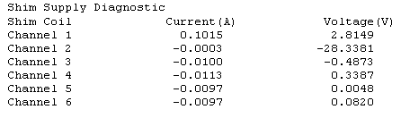

Operating Documentation
Direction 5670000, Rev# 1
Optima MR450w 1.5T Service Methods
Module Version 2.0, Version Date 6/27/08
Operating Documentation |
Diagnostics >> Hardware Location >> Pen Panel Cabinet >> Shim Supply Diagnostics
Diagnostics >> System Function >> Magnet >> Shim Supply Diagnostics
This diagnostic provides read back of the channels’ present voltage and current.
This diagnostic is part of the Shim Supply Diagnostics that comprise the series of tests that verify and display various Shim Supply values by communicating from the SCP to the Shim Supply via the CAN link.
Set the Test Duration to the number of seconds desired.
Select the Read Current/Voltage radio button, then press the [Run] button.
Examine the display results.
Shim Supply
Coil Channels
RTD Channels
Software Configuration
Standard Software
CAN communications NOT emulated
Hardware Configuration
MGD Chassis: SCP and AGP Processor boards. Bridge board
Shim Supply, cabling, etc
Illustration 1: Shim Supply Block Diagram

The operator selects the Read Current/Voltage radio button, then presses the [Run] button.
The diagnostic issues a command that instructs the Shim Supply to return the present voltage for each coil channel.
The diagnostic displays the results.
| NOTE: | The Shim Supply is first checked to ensure it is in the proper state. Commands to the Shim Supply are issued via the CAN interface on the SCP. |
Input errors, Shim Supply State errors, and test condition errors are indicated in red.
Illustration 2: Sample of Diagnostic Results
